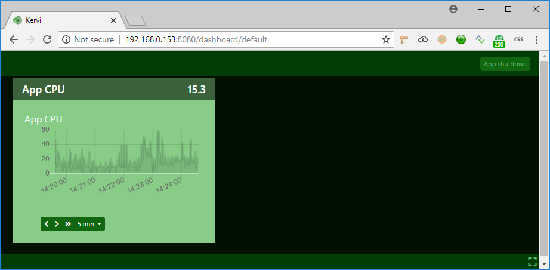
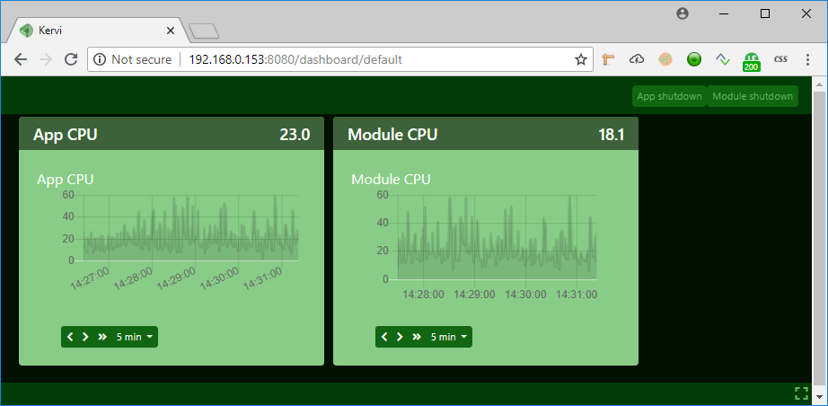

Distributed applications¶
With the kervi framework it is possible to distribute your application across several computers. One computer is the main computer where your kervi application run. On the other computers you create kervi modules that connects to your main application. The kervi web ui will update it self as the modules starts and stops.
Use cases¶
You can use this capability to connect several rapsberry pi’s and let them work as one. An example could be several connected raspberry pi cams that.
Main application¶
You create and run your main application as normal.
if __name__ == '__main__':
from kervi.application import Application
APP = Application()
from kervi.sensors import Sensor
from kervi.devices.sensors.system import CPULoadSensorDeviceDriver
SENSOR_1 = Sensor("app_CPULoadSensor", "App CPU", CPULoadSensorDeviceDriver())
SENSOR_1.link_to_dashboard(type="value", link_to_header=True)
SENSOR_1.link_to_dashboard(type="chart")
APP.actions.shutdown.link_to_dashboard("*", "header_right", inline=True, label=None, button_text="App shutdown")
APP.run()
Run the application and the result should look like this:
Application modules¶
Kervi application modules works almost identical to applications.
if __name__ == '__main__':
from kervi.module import Module
APP_MODULE = Module()
from kervi.sensors import Sensor
from kervi.devices.sensors.system import CPULoadSensorDeviceDriver
SENSOR_1 = Sensor("module_cpu_load", "Module CPU", CPULoadSensorDeviceDriver())
SENSOR_1.link_to_dashboard(type="value", link_to_header=True)
SENSOR_1.link_to_dashboard(type="chart")
APP_MODULE.actions.shutdown.link_to_dashboard("*", "header_right", inline=True, label=None, button_text="App shutdown")
APP_MODULE.run()
Run your module python script on another computer on your local network. After a few seconds the web ui should update it self and showing your module sensor.
Application discovery¶
I the example above, the module is able to discover the application via the build in app discovery capabilities of kervi.
When the app start it will listen to discovery requests from modules broadcasted on port 9434 (configurable). The discovery broadcast includes the app id. The default id for kervi app is kervi, but you can change it via configuration.
For the app:
APP = Application({
"application":{
"id": "my_app_id"
}
})
In the module configuration you enter the same id as in your application:
APP = Module({
"application":{
"id": "my_app_id"
}
})
Discovery configuration¶
You are able to disable app discovery and change port via the discovery settings in configuration.
APP = Application({
"application":{
"id": "my_app_id"
},
"discovery":{
"enabled": True,
"port": 9999
}
})
If you change the port you must do as well in the module config.
APP = Module({
"application":{
"id": "my_app_id"
},
"discovery":{
"port": 9999
},
})
Connection without auto discovery¶
If you want to connect modules without auto discovery you can enter the ip address and the ipc port that the module should use.
APP = Module({
"application":{
"id": "my_app_id"
},
"network" : {
"ipc_root_port": 9500,
"ipc_root_address": 192.168.153
},
})
You can see address and port in the IPC address line when your application starts
no config file found, revert to defaults
Starting kervi application: Kervi
IPC address: tcp://192.168.0.153:9500
Using HAL driver: kervi-hal-win
start storage service
load interprocess communication
start websocket: 192.168.0.153 9000
Listining for discovery requests on port: 9434
Your Kervi application is ready at http://192.168.0.153:8080
Press ctrl + c to stop your application